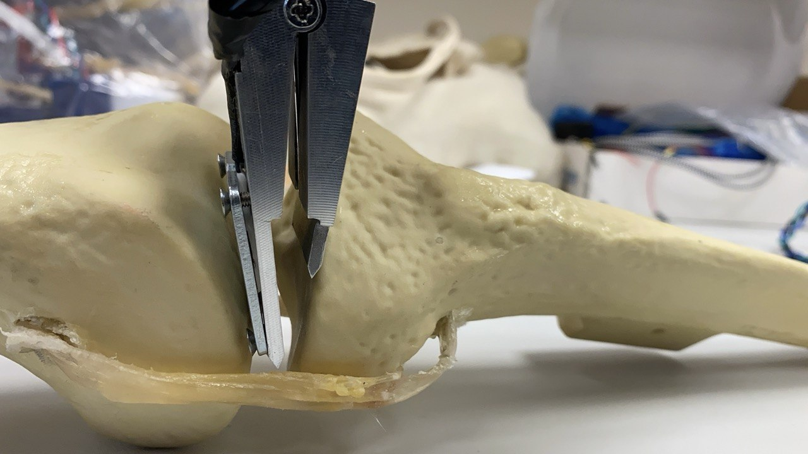
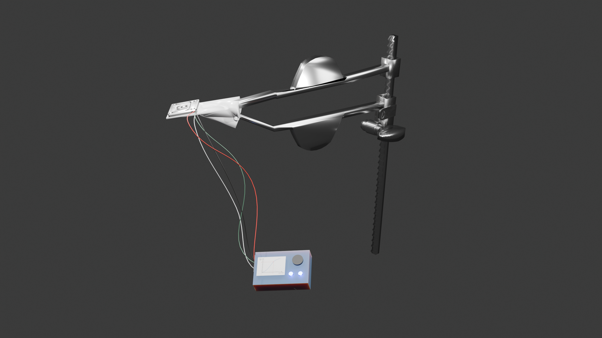
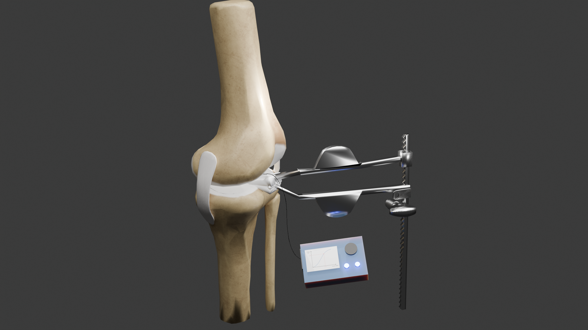

I recently graduated from the National University of Singapore (NUS) with a degree in Mechanical Engineering and Innovation & Design. I'm currently seeking full-time opportunities in product innovation, product design, design engineering, or related roles.
Through my academic projects, internships, and hands-on design experience, I've developed skills in user-centered design, prototyping, problem-solving, and product development. I enjoy working at the intersection of engineering, creativity, and innovation to build meaningful products and experiences across different industries.



I'm designing an orthopaedic device that measures soft-tissue tension during total knee replacement surgery, aimed at improving post-operative satisfaction. I began by mapping the surgeon's intra-operative journey and conducting in-depth interviews with clinicians to uncover pain points around inconsistent tension assessment and insufficient feedback loops.
Collaborating with engineers at Johnson & Johnson and clinicians at Singapore General Hospital, I translated these insights into actionable design requirements and led iterative exploration of hardware and interface concepts. I spearheaded the prototyping effort, integrating sensors with a personalised force-to-joint-gap feedback system, and tested early prototypes with users to validate clarity, ergonomics, and workflow fit.
Used design thinking and user-centric approaches to conduct surveys and user interviews before identifying the key pain points experienced by the surgeon. The project is in collaboration with a business fellow and a medical fellow, and it has taught me a lot about working in a multi-disciplinary team.
As team lead, I designed a training model to help caregivers practise infant nasogastric (NGT) insertion safely before performing the procedure on a real child. We began with contextual research in hospital settings, observing training sessions and conducting in-depth interviews with both nurses and caregivers to uncover real anxiety points, common errors, and gaps in existing tools.
Using design thinking and co-creation workshops, I guided the team in turning these insights into personas, journey maps, and key opportunity areas focused on confidence-building, feedback clarity, and repeatability.
We developed and iterated on multiple prototypes, combining soft materials, embedded sensors, and actuators to replicate realistic resistance and provide immediate visual and tactile feedback when the tube was inserted correctly or incorrectly. The final product was deployed for pilot testing and recognised as the "Most Inspiring Project" among 30 teams — a reflection of its strong user-centred design process, clinical relevance, and tangible impact on caregiver confidence.
Under the guidance of Dr. Jason Ku, I've developed a software tool that converts images of origami crease patterns into standardised, vector-based digital formats for designers and researchers. The goal is to make complex crease data more accessible and editable, bridging traditional paper folding with computational design workflows.
I designed and implemented algorithms using breadth-first and depth-first search to detect edges, vertices, and connectivity within scanned crease patterns. This required learning JavaScript, HTML, and CSS to build an interactive web-based interface where users can upload, visualise, and refine crease structures in real time.
As an origami enthusiast myself, this project let me explore the intersection of art, mathematics, and computation — treating each algorithmic feature like a product interaction that must be intuitive, accurate, and responsive. The ongoing work aims to evolve into a full-fledged tool for the origami and design community, making computational folding more approachable and collaborative.
At Bajaj Auto, I designed automation tools to streamline repetitive tasks in brake system design. I began by shadowing design engineers and mapping their end-to-end workflow — identifying time sinks, frequent error points, and friction moments that slowed iteration.
From these insights, I collaborated with a team of five engineers to co-design automation scripts that restructured key processes, reduced cognitive load, and standardised modelling steps. My focus was on making the tools intuitive, efficient, and aligned with engineers' mental models, not just technically optimised.
The result was a more seamless, consistent design workflow that cut manual errors by ~40% and improved adoption by making automation feel natural rather than imposed. This project taught me to approach internal tools as user products — balancing usability, technical precision, and measurable impact.
At Foley Designs, I designed a child-friendly DIY lamp kit for children aged 5–10, blending safety, learning, and delight. We began with observational research sessions with children and parents, watching how they interacted with early prototypes — where they got stuck, what sparked curiosity, and when they lost focus.
Using those insights, I simplified the assembly journey, redefined connection points and affordances, and restructured the instructions to make the experience intuitive and self-guided, even without adult assistance. I integrated Arduino and sensors within a Fusion 360-based 3D printed form, ensuring all electronics were securely enclosed yet visually engaging.
Through rapid prototyping and iterative user testing, I refined the physical and interaction details to make the kit rewarding, safe, and frustration-free — teaching me how thoughtful design can make complex technology feel simple, empowering, and fun.
Guided 200 first-year students in design ideation, laser cutting, and prototyping techniques with a focus on product development and efficiency. Enabled students to enhance their design thinking skills by helping them troubleshoot their robotic car designs.
Used Arduino to program the robot to pass an obstacle course, and used Autodesk Fusion 360 to design the parts of the robot. Learnt fundamentals of engineering design and prototyping to make a robot, and helped students apply the same iterative design-and-test process to their own builds.
I believe the best products come from understanding people first. My process always starts with observing, interviewing, and mapping — before a single prototype is made. Then I iterate fast, test honestly, and refine until the thing actually works for the person using it.
I believe that my academic excellence and varying interests not only make me a well-rounded and balanced person, but also provide me with the confidence to dream big, the conviction to chase my dreams and the single-minded focus to convert them to reality.
I'm actively looking for full-time roles in product design, design engineering, or UX-driven hardware. If anything here resonates, I'd love to connect.